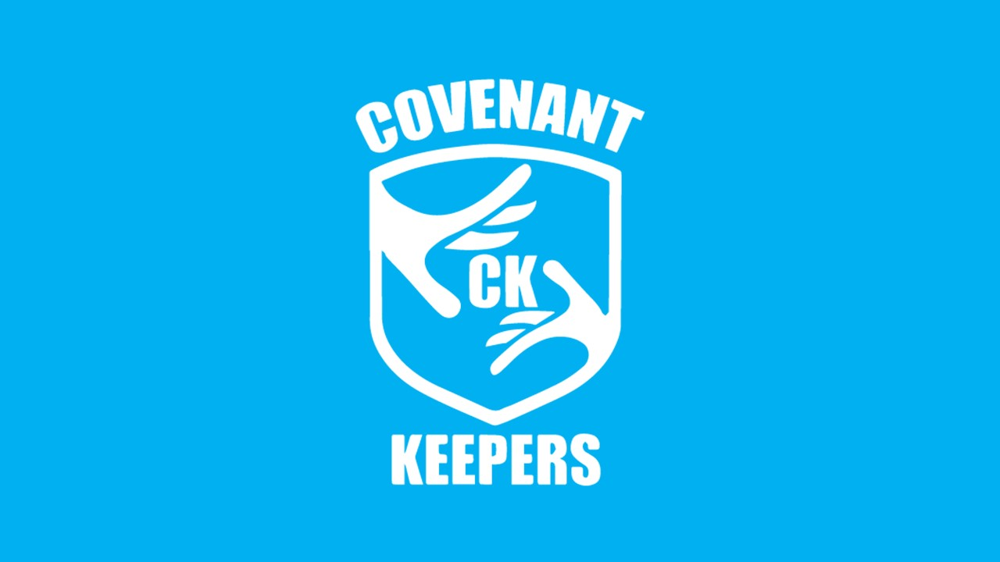

Vision:
“Develop the whole man.”
2 Timothy 3:17
Our Mission:
• Develop soul, body and spirit.• Pursuit of spiritual excellence in all spheres of life.
Strategic Objectives:
- • Advocating for responsible and proud fathers.
- • Inculcating positive habbits and attitudes.
- • Enabling the voice of integrity to be heard in every community.
- • Skills Development.
Background
- Covenant Keepers is the Men’s department within the Burning Bush Ministries. It was birthed out of God’s promptings on the leadership of BBM that, there is a need to focus on building up men within the church and thus the society.
- The name “Covenant Keeper” was not thought of but it came out of prayer and seeking the Lord’s guidance. The name came as an answer to what kind of a man God is seeking for. A covenant keeper is not just a believer only but it he who knows that he is in a blood covenant /contract, first with God. All his actions are guided by the truth that the Blood of the Lord Jesus Christ and its work, form the foundation upon which his life is built. A covenant keeper, therefore, must understand that this is a covenant not to be broken but one to be kept and held on to, for him to live a life of meaning and purpose.
- The CK department encompasses all men, young and old, married and single. Whilst we acknowledge that the needs of the different age groups are not the same, no discrimination based on physical features is allowed.
The Pledge:
- If the promotion of moral values is the key driver of the organisation, our emblem (coat of arms) should support this.
- Before the adjournment of any meeting a pledge must be made.
- Covenant Keepers will represent men who stand for and pledge to the following:
- • To be protectors and defenders of their homes.
- • To cherish and love their children.
- • To provide for their families.
- • To uphold law and order in society.
- • To be nation builders.